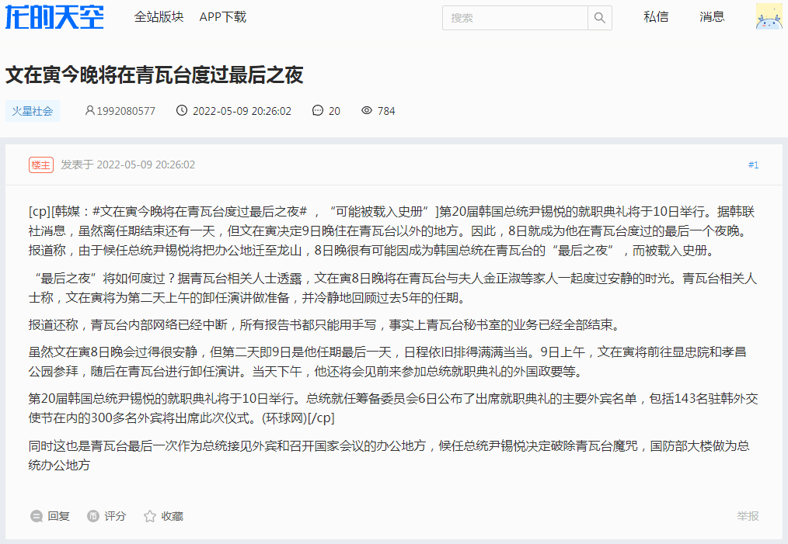
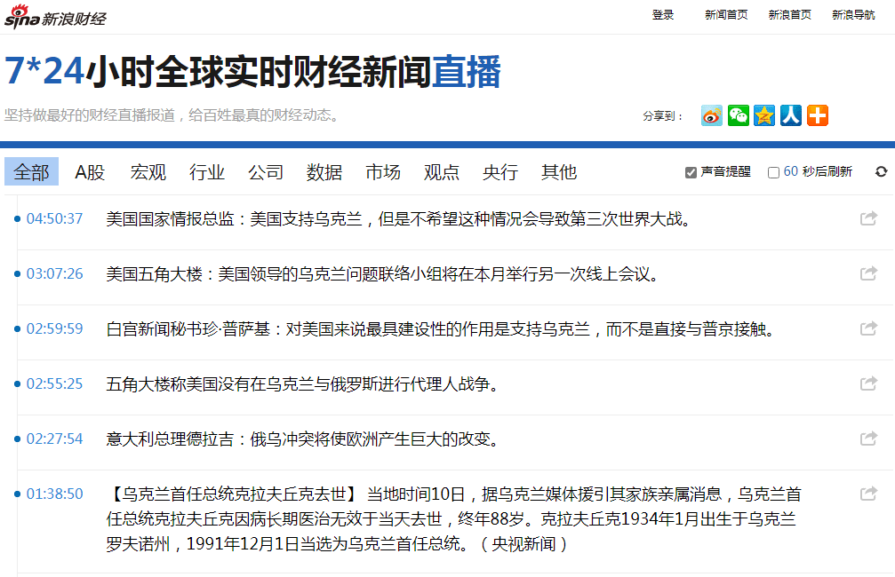

2022-05-10 09:30
最近备份论坛发言，现在正在「查缺补漏拾遗辑佚」当中，可能随着篇幅增加会把相关内容拆出来单独成页，这也是决定用助记符而不是编号当文件名的理由。与其中部分谈笑风生当时语境相关的应景情报是这一条：

简单说，所谓「青瓦台魔咒」，就是「举头三尺有棱镜24×7全方位巡查监视无死角」所导致摄像头后的观众朋友与窃听器后的听众朋友「笑得肋骨疼」之余可以「打赏充值定制剧情」所以坚决贯彻落实「作者最大剧本钦定导演叫人三更死谁敢留人到五更」。
前情提要是美帝灯塔国尼克松「水门事件」由于脱离剧组规章制度「只能导演监视演员，不能对台戏各演员之间互相监视」所以直接下台。
至于为什么摄影棚只能掀翻，可以参考我中华兲嘲上国典故：在美帝灯塔国定制的「空军一号」验收时发现「当查出一只摄像头窃听器的时候意味着暗地里有一千只摄像头窃听器在活动」于是只能搁置，到现在也没有「为人民公仆服务」过。于是损失……「就当打水漂或交学费了嘛，（手抚后脑勺）蛙蛤蛤蛤」。
为行文简略且便于读者浏览，这里仅简单摘抄部分相关内容。
简单说，在与通行版本有着明显差别的色目版《吴越春秋》当中，特意凸出的「主角」，偏偏是文种，高瞻远瞩算无遗策，运筹帷幄之中决胜千里之外，多智而近妖……简直是评书演义当中各种「智多星」形象的集大成者，从头到尾「一切尽在掌握中」，牢牢控制住局势。
比方说，劝勾践忍一时风平浪静让三分海阔天空「吔屎啦你」，亲自把老婆送去苏州给吴国亲王玩还得赔笑脸。这还不够，说文种还把范蠡的老婆西施捉走一起送到苏州，让夫差左拥右抱「夫前犯」还让绍兴君臣二人「吹箫助兴」。
后面的事情与历史大同小异，说文种留守绍兴，把之江上下整顿得雷厉风行。好不容易勾践两口子回国，发现政令不出什么宫，每天回家必须卧薪尝胆，上班的时候在办公室门口被打杂的碎催指着鼻子骂，还得低头认怂自我批评。顺便，范蠡老婆西施就没陪着回来，家徒四壁光棍一根。
然后之江「十年生聚十年教训」整整二十年都是「政由太师，祭由寡人」。这位权倾朝野的「文太师」的形象，与码字巨侠普祥真人于划时代大作《范进的平凡生活》当中塑造的张居正一样。在那充沛着色目文艺爱好者的宣传阵地当中，来自评书曲艺的那些传统素材都是通用的，无论色目逗哔码字还是扯淡措辞都差不多。
再然后就是反攻倒算了，其中就体现了我中华兲朝上国那发达的谋略传统，包括但不限于「海湾战争美军人手一本孙子兵法」之类。说文种在之江大丰收的前提下伪装成遭灾闹饥荒，指使勾践「膝盖生根头顶绿得发黑贱到骨子里去了」找夫差借粮食，然后江苏就把国库搬空了。
转过年来文种就把陈年粮食煮熟还给江苏，江苏种下去之后不出意外的绝收，真闹饥荒，找之江借粮食。这时候文种把脸一抹显出本相，撕毁「澶渊之盟」，勒令勾践发布「七大恨」起兵攻吴，一路摧枯拉朽势如破竹，终于把《长三角地区一体化发展》一张蓝图绘到底了也。
再往后没提，正如划时代网文大作当中张居正没有被抄家灭族一样，想必在当代「作者编剧导演」的新编剧本里面，文种也是开挂升级装哔打脸平砍连击带顺劈一命通关天下布种的钦定主角龙傲天，最起码「文家」从此崛起于江东豪门之林那是肯定的。
——《小样，别以为你穿个马甲我就不认识你了！》
还有就是自打本世纪初「房地产作为支柱产业」方针政策路线计划出台并一路贯彻落实到现在近乎完成这段时间，「建筑业」相关人士极大充沛，想必许多读者都有第一手材料，细节不用啰嗦。总之之前体制内的大批「铁饭碗」岗位都已经被召之即来挥之即去的「农民工」取代，但是后遗症也有。
我听说的，就是多年前谁接了外包的装修项目，啥机关单位的会议室什么地方，刮掉旧腻子的时候发现了个窃听器，然后项目就被喊停了。确认是「上次」装修时安装的，找不到经手人也没有任何档案记载，总之先杜绝「这次」再被装上与时俱进窃听器与针孔摄像头再说。再然后似乎就是「死命令」又下来了，「项目一律不外包」「必须使用一切尽在掌握中的正式工」，这个消息是与「偏殿向美方定制的“空军一号”专机验收不合格只能闲置」同时传出来的。
当时科技不甚发达民智不甚大开，如同《零零七》系列文艺理论早期体现的冷战时期电子工业水平那样，间谍器材也就是后来民用随身听那种体积。而如今繁荣的简体中文互联网上都有公开贩卖间谍器材，并提供自古以来不存在的宣传阵地当中人民群众喜闻乐见的「旅馆出轨」系列重要视频打广告。
再然后就是「雷政富十二秒感动中国」系列重要报道了，在《异闻录》当中已经提到了，全国范围内所有「宿泊」地点与部分民宅当中，都有自称「老大哥」的情报工学神童贵种大少爷的活动痕迹。虽然大部分场所都是贱种屁民畜牲韭菜专用除了不雅视频之外没有任何保存大数据的军事必要性，但是等到关键人物入驻之后再临时抱佛脚装上窃听器摄像头就来不及了。所以据称「潜规则」出台，但凡新房装修旧房改造，「一律加装间谍器材」「全力确保各地外景片场摄影棚24×7全方位巡查监视无死角」。平时都是待机状态以贯彻落实低碳环保绿色节能理念，等接到导演指示「演员入驻」之后时任值班临时工再伸出一根小指头点一下鼠标「远程激活」高科技设备即可。
是为「窃听器后的总装备部」者也。
——《今夜无人算命与疑神疑狗》
2022-05-11 05:30
到现在把手头备份的和能找到的论坛发言基本上都进行了备份，新拆出《钦定文豪以“网络文学鬼才”出道转进“实体出版怪人”之谜》页面用来收录网络文学相关谈笑风生。然后上网乱转，没发现什么色目含量甚高的重要情报。那么就有关方面共同关心的问题简单写几句结束本篇日志：

简单说，很多舆论都指出，无论这场战争最后是什么结果，都彻底终结了「冷战残余」，而之前在德意志合众国安哥拉中堂退休之后就有类似舆论称欧洲有关国家和地区由于历史原因形成的「冷战情谊」至此不复存在。也就是说，以「战后国际秩序」为基本球策的「联合国」系列重要组织，没有存在的必要或者逐步转化为茶话会之类地位了。
现在看来，打成「第三次世界大战」例外，打完了之后无论什么结果，都会形成「新・战后秩序」，然后把「国联」「联合国」或其类比物「重修庙宇再塑金身」，然后还会有类似段子所形容的情况出现：
小国和小国有矛盾，联合国一调解，矛盾没了。
小国和大国有矛盾，联合国一调解，小国没了。
大国和大国有矛盾，联合国一调解，联合国没了。
于是现在「战后国际秩序」最大受益者不希望「重建秩序」也是理所当然，但是一个巴掌拍不响，真有一方铁了心想打，肯定奉陪到底。不要动辄拟人化比喻或被类似的庸俗化解读误导，一个利益团体不是一个人，不会由荷尔蒙驱动，或者说该团体当中那许多主事儿的人荷尔蒙驱动的敏感点不见得相同，于是不会被任何单独的荷尔蒙分泌机绑架裹胁，除非就「死到临头」局面达成共识，哪有无条件投降的道理。
然后呢，说现在就开始「反思」「痛定思痛」还为时过早，只不过肯定已经有人开始琢磨「这场仗到底是怎么打起来的」，到头来正如「纳粹其兴也勃焉其亡也忽焉」或「苏联的崩溃不是轰隆一响而是噗哧一声」那样会出版汗牛充栋的论文，吵个几十年并为大批相关从业人员提供铁饭碗。
按照之前的惯例，从我个人视角观察，体现到终端节点的最终结果是十步一岗五步一哨夜不闭户路不拾遗兲子脚下首善之区国际一流和谐宜居之都城乡结合部吉普赛社区军休所出没的哥布林的活蹦乱跳，而寻根溯源的根本原因肯定是约谈家贼的大手情报机构有关部门临时工党性坚定的老审查员为了让观众「笑得肋骨疼」并「打赏充值」而运作充沛的人脉在东欧「定制剧情」。